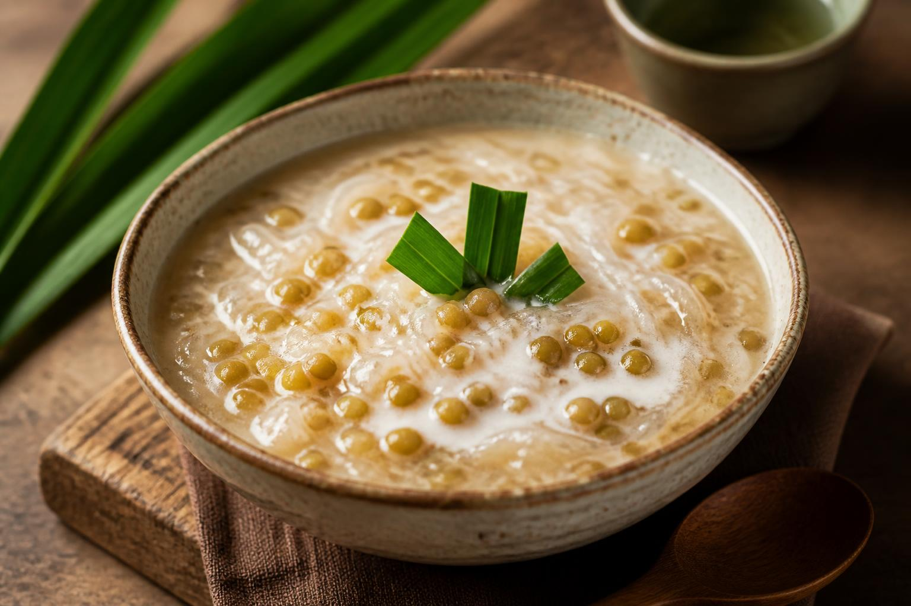

← Back to recipes

Chè Đậu Xanh
Mung Bean & Coconut Sweet Soup
From Dì Hương
Nguyên liệu · Ingredients
- 1 cup dried split mung beans (đậu xanh cà), husked
- 1 can (13.5 oz) coconut milk
- ½ cup sugar, or to taste
- ¼ teaspoon salt
- 3 cups water
- 2 pandan leaves, tied in a knot (optional, but Dì Hương always used them)
- Tapioca pearls, cooked (optional topping)
Nước cốt dừa · Coconut Cream Topping
- ½ can coconut milk (the thick cream from the top)
- Pinch of salt
- 1 teaspoon cornstarch mixed with 1 tablespoon water
Cách làm · Instructions
- Soak the mung beans: Rinse the split mung beans several times until the water runs clear. Soak in water for at least 1 hour, or overnight for the creamiest texture. Drain.
- Cook the beans: In a medium pot, combine the drained mung beans, 3 cups water, and pandan leaves (if using). Bring to a boil, then reduce heat to low. Simmer for 20–25 minutes, stirring occasionally, until the beans are completely soft and starting to break down.
- Sweeten: Remove the pandan leaves. Add sugar and salt, stirring until dissolved. For a smoother chè, mash the beans gently with the back of a spoon. Dì Hương liked hers slightly chunky — "so you know it's homemade."
- Add coconut milk: Pour in the coconut milk and stir gently. Heat through for another 2–3 minutes. Don't let it boil hard once the coconut milk is in.
- Make the coconut cream topping: In a small saucepan, warm the thick coconut cream with a pinch of salt. Add the cornstarch slurry and stir until slightly thickened, about 2 minutes.
- Serve warm or chilled — both are traditional. Ladle into bowls and drizzle the coconut cream topping over each serving. Add cooked tapioca pearls if you like.
Dì Hương's tip
"Soak the beans overnight if you can — they cook faster and the texture is better. And don't skip the coconut cream on top, it's the whole point." She'd make a huge pot of this for Tết every year. The kids would eat it for breakfast, lunch, and dessert.
❦
A recipe from Dì Hương's kitchen